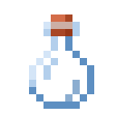
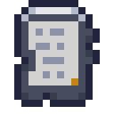
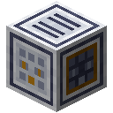
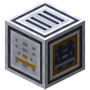
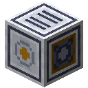
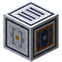
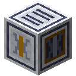
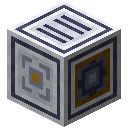

The Refinery
A shard is one record with holes in it. The box of a fallen mast holds something else as well: a Relay Dump, all that its relay passed on, as it came. A dump holds about 440,000 characters, thirty times a found drive, and most of it is no use as it lies. A message was sent until it was heard, so the same record comes round again and again. Bad lines garbled some messages and put the words of others out of order. Between messages the line carried nothing but its own pulse, and every keeper put the same few lines round everything.
A Refinery is a line of machines that text runs through, ending in tanks of tokens a model can practise on. Every machine does one thing to the text, and you can measure what that was worth.
Building the line
Text leaves a machine by its front and crosses the air to the next machine in line, up to 12 blocks off with nothing solid between, coming in on any other side. A machine's front points away from you when you place it, and sneak-using a side turns it to that side. So a Refinery is a hall, built the way you walk. Each line of writing in the stream is the text itself, in the colour of its kind, and there are as many lines as there is text left, so you can watch it thin. What a machine takes out falls off it. Each machine draws 40 FE a tick from its power while it works, one at a time as the text reaches it.
The machines can stand in any order, and leave out any you like; only the Intake comes first and the tanks last.
The Intake comes first, with what you found in its slots.

Each machine stands in front of the last, its own front pointing on. The one the text has reached is at work.

The tanks come last, and keep what is left.

 Crafting
Crafting


The Refinery Intake takes up to nine Archive Drives and Relay Dumps. Refine, in its toolbar, sends all of it down the line. The other machines but the tank come out of the Fabricator from a transformer photomask.
Taking out copies
The Duplicate Sieve takes out what it has already seen. Exact copies go by a hash of their text. Near copies go by MinHash: a document is reduced to its runs of five words, and 128 hash functions each keep the smallest value over those runs. Two documents agree on any one of the 128 about as often as they share runs, so a few numbers stand for the whole document, and documents that agree on a whole band of those numbers are worth comparing. The panel beside its screen draws the curve that makes: how likely two documents are to be compared, by how alike they are. Of two near copies the longer stays. Long lines it has seen before go too, which is most of what keepers wrote round their messages.
Four dumps come to 1.75 million characters. The Sieve finds 253 exact copies and 306 near ones, and leaves half of it. Its threshold matters: at 0.3 it finds 320 near copies, at 0.7 only 161, since a message sent again comes back a little changed.
Filtering
The Filter Bed throws out documents by rules about how text looks: too few words, too many marks, words too long or too short to be words, one line said over and over, lines that hardly ever end. Each rule can be turned off in the toolbar, and each row of its screen says what that rule threw out. None of them reads. On four dumps they threw out all of the carrier and a fifth of the scrambled messages, whose lines no longer end where a sentence does; the other four fifths and every garbled message went through.
Classifying
The Quality Classifier has a model read each document and say whether it is writing or a bad line has been at it. It needs no examples of bad text. A model that has read a lot of writing knows what comes next in writing, so what a bad line has been at surprises it, letter after letter, and a document gives it hundreds of letters to go by. The model has to pass Quality, tested on documents no shard carries, half of them spoiled. Practise it on a drive, as you would for Reading. It asks little of a model that reads at all: one that reads three letters back passes after 300 steps on a thousand found records. One that reads a single letter back is at 84% after 1,000, since a pair of letters is hardly surprised by good words in a bad order.
At the start of a pass the model reads some documents it knows the answer to, and finds how much surprise divides good from bad. After that the Classifier goes by what the model is sure of, at the threshold you set in the toolbar. What the model is not sure of goes to a rule, and with no model the rule decides alone: too many words it has never seen, and the text has gone bad. That rule is cheap. On a dump it caught all the garbled documents and all the carrier, and threw out nothing else. It has nothing to say about good words in a bad order. That is what the model is for, and the threshold is how far you trust it. A model two blocks 32 wide, after 1,500 steps, on four dumps:
| Sure enough at | Scrambled documents thrown out | Good documents thrown out |
|---|---|---|
| 60% | 64% | 7.5% |
| 75% | 40% | 3.1% |
| 90% | 19% | 0.9% |
| 99% | 0.6% | none |
Each answer costs inference, from a checkpoint in the slot beside its screen or from a Model Server through a Relay Card, and a server answers 64 documents at a time.
Writing by rule
The Program Press adds text of its own to the stream: sums with their working, orders with what they mean, things
with their kinds, or a book of your own. A book in its slot has a template on each page, and {a|b} comes out as one of the two, so
The {miller|baker} sold {two|six} {loaves|jars}. writes eight sentences. What a rule writes is right, and costs nothing to find, and
it knows only what the rule knows. Orders and sorting lines draw only on what those benchmarks' practice names.
A model's steps are what it pays with. Added to a thousand found records for the same 400 steps, a tenth of orders takes a small reader from 26% to 49% on the Orders test, and sorting lines from 4% to 37% on Sorting, while its held-out loss on writing goes from 1.763 to 1.81 and 1.83. A quarter takes them to 56% and 61%, and the loss to 1.84 and 1.87. Sums cost the same and give back nothing it can show: even on tallies and lists, where sums are kept, the loss goes from 1.78 to 1.82.
Mixing
The Domain Mixer sets how much of each kind of writing a model reads. A row on its screen for each domain shows its share of practice; click it for a half, twice or four times its share of the text, or none. The text itself stays in the tank.
Four times the tales takes a small reader from 1.761 to 1.739 on tales it has never seen, and none at all to 1.789. The test on all records hardly moves either way, 1.763 to 1.769 and 1.764, since it has every kind of writing in it: what one kind gains, the others pay for.
It can also anneal: a model that has read everything goes on for the last of its run on one domain alone, at a fifth of the rate. Set the domain and the step in the toolbar. In a Model Core the run does this by itself once it has gone that far. It takes a long run to be worth it, since a model still learning fast only loses by slowing down. Over 2,000 steps, the last 400 on one domain take tales from 1.541 to 1.515, know-how from 1.496 to 1.474 and tallies from 1.555 to 1.537, at a cost of 0.01 to 0.03 on everything. A measure gives annealing a run that long of its own.
Looking for the tests
A score means nothing on a test the model has already read, however the text got there. The Contamination Check
looks in the text for what every benchmark tests on and says what it found, a row a benchmark. Prose is compared by runs of 13 words, and a
benchmark's own lines line by line, counting only lines its practice never shows:
= stay is in the test and in practice alike, but = fetch oak logs is the test's own. Tests that are played, not read, have nothing
written to find. It takes the lines out, or only says so if you set it to.
The old world quoted itself, so the archive holds some of this already. All the records shards carry hold 62 of Reading's 808 test records and 9 of Orders' 949 lines, in 205 lines of text, about a quarter of a percent of it. A thousand found records hold 13 and 1, in 21 lines. Taking them out does nothing for a small reader, which can't remember what it reads anyway. Given all of Orders' test to read, it scores 51% where it scored 49%, and 51% again with the Check's lines taken out, which is what readers differ by. A Check is there for scores you mean to trust.
Tanks and cells
Crafting


The stream ends in a Token Tank, which fills as the last of the text comes in. It holds a million characters; more tanks in line, each in front of the last, hold a million more each, and what doesn't fit is spilled. A Tokenizer in its slot counts what it holds as tokens that tokenizer cuts. Whoever stands by while a tank fills learns of the places its text tells of, and a Wayfinder can then lead there.
Crafting (Shapeless)


A Token Cell put in a tank's cell slot draws on all the line's tanks hold. In a Model Core's Data slots it is practice for Reading, drawn by the mix and annealing as you set them. Refine again and the same cells draw on the new text.
What each machine was worth
Measure, in the Intake's toolbar, tells you what each machine really did. It trains a small reader on the text as each machine left it, from nothing, three times from the same three starts, and tests each on the records no shard carries. Readers read 8 letters back and train for 400 steps, so this takes minutes and runs beside everything else. A reader this small says what the text teaches about writing, and little of what a big model could make of it. What each machine did to held-out loss floats above it: green for better, amber for worse, grey for what chance alone could do. Its screen says from what to what. The tank says what the whole line did.
Here is what that came to on four dumps, each machine in the order you would meet it:
| After | Text left | Held-out loss |
|---|---|---|
| As it came | 1,745,158 | 1.827 |
| Duplicate Sieve | 892,025 | 1.851 |
| Filter Bed | 717,448 | 1.835 |
| Quality Classifier, the rule alone | 501,185 | 1.781 |
| Quality Classifier, with a model | 430,132 | 1.773 |
| Contamination Check | 429,047 | 1.773 |
On a thousand records filed from shards, 982,189 characters at 1.763, no machine moved the loss by more than 0.002, which is less than the readers differ. The clerks of the old world seem to have taken out copies and spoiled pages long before any of it reached a shard, and there is little left for a Refinery to do. A machine that does little is worth knowing about, and one you can leave out of a line.
On dumps the Sieve makes things worse at first. What it takes out is clean, so what a bad line has been at is a bigger share of what is left. Put it last instead, behind the Filter Bed and the Classifier, and it takes 60% of the text and moves the loss by nothing at all. For a reader this small, a Sieve saves you tanks.

The Intake. Its front points down the line.
The machine the text has reached.
A Token Tank, where the line ends.
Tensor CasingHopperRedstone DustArchive DriveBlock of CopperRefinery Intake





Copper IngotGlassToken Tank Glass BottleAmethyst ShardToken Cell
Glass BottleAmethyst ShardToken Cell